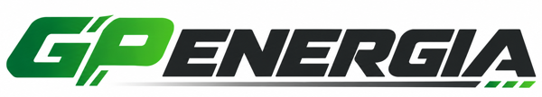
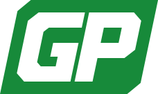

Logo GP ENERGIA - trzy warianty do wyboru
Wszystkie warianty wychodzą z przesłanego wzoru: gruby, prosty krój bez szeryfów pochylony do przodu, zieleń i grafit. Różnią się potraktowaniem liter GP - kolorem, połączeniem liter i znakiem. Każdy wariant pokazany jest na jasnym i ciemnym tle oraz w małym rozmiarze, jak w nagłówku strony.
Litery są narysowane od podstaw jako wektor (SVG), więc logo nie wymaga żadnej płatnej licencji na font. Kolor zieleni, grubość, pochylenie i kształt liter GP możemy dowolnie dopracować po wyborze wariantu.

Przesłany wzórWariant 1 - zielone GP, grafitowe ENERGIA
Najprostszy i najbardziej uniwersalny. GP w jednolitej zieleni, bez gradientu i cięć, więc dobrze wygląda w każdym rozmiarze, na pieczątce, fakturze i haftowanej odzieży. Ten wariant jest teraz użyty na stronie.


Wariant 2 - połączone GP z cięciem, linia pod nazwą
Najbliżej przesłanego wzoru. G i P stykają się i rozdziela je ukośne cięcie, zieleń przechodzi od ciemnej do jasnej, a pod ENERGIA biegnie linia zakończona trzema zielonymi kreskami. Najbardziej dynamiczny, sprawdzi się na dużych formatach: oklejenie auta, baner, stoisko.


Wariant 3 - znak GP w zielonym polu
Białe GP w pochylonym zielonym polu ze ściętymi narożnikami. Znak GP działa też samodzielnie: jako ikona strony w przeglądarce, zdjęcie profilowe, naklejka na kartonie z magazynu.

Pliki: jasne tło (SVG) · ciemne tło (SVG) · sam znak (SVG)


Co dalej
- Proszę wskazać wariant (albo elementy z kilku, np. kształt z wariantu 2 i kolor z wariantu 1).
- Do ustalenia: odcień zieleni (jednolity czy przejście ciemna-jasna), kształt i łączenie liter GP, czy zostaje linia pod nazwą.
- Po akceptacji przygotujemy komplet plików: SVG, PDF do druku, PNG w kilku rozmiarach i ikonę strony.